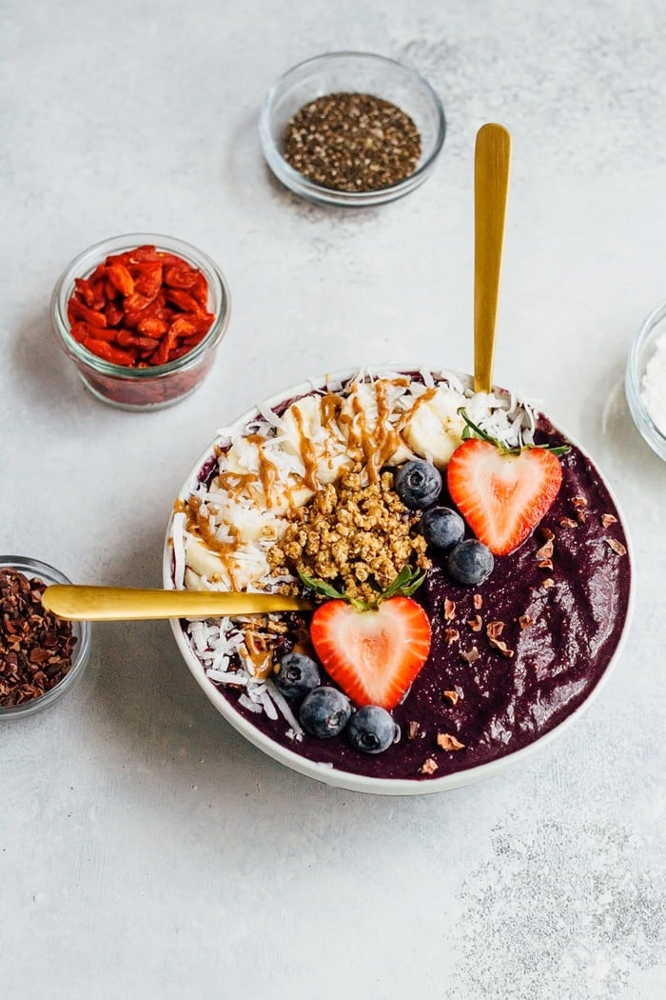

Self Care Sunday: Superfood for your Skin
Proper skin care isn't just superficial; it starts from within. The saying "you are what you eat" holds true when it comes to skin care and your diet plays an important role. Superfood is generally defined as a nutrient-rich food considered to be especially beneficial for health and well-being. The superfoods you'll read about today are proven to promote good skin health. By no means am I suggesting you completely overhaul your diet, either. You can simply add a superfood by way of a daily smoothie or as a snack alternative. Discover your Fairy Glow Mother's top 5 superfoods for beautiful skin along with tips for the best way to consume them below!
Maqui

- 1 cup unsweetened vanilla almond milk
- 1 cup frozen cauliflower
- 1 cup frozen blueberries
- 1 Tablespoon coconut butter (almond butter works too)
- 2 scoops vanilla protein powder
- 2 Tablespoons wild maqui berry powder
- toppings of choice: goji berries, superfood maca granola, cacao nibs, unsweetened shredded coconut, chia seeds and fresh fruit
INSTRUCTIONS Add ingredients into a high powered blender in the order listed and blend until smooth and creamy. Add more almond milk if you want the texture to be thinner. Serve in a bowl with your favorite toppings.
Lucuma
Lucuma Ice Cream Recipe → Cultivated in Peru for centuries, Lucuma is a superfood that boasts 14 essential minerals along with Beta-Carotene, Zinc, Iron, Vitamin C, Niacin (B3), and Fiber. Oh, and I can't forget to mention that it also contains as much calcium as cow's milk! Since it is so rich in antioxidants, it helps to slow the signs of aging. But it also fortified with antimicrobial, antifungal, and anti-inflammatory properties as well which help to stabilize breakouts on the skin. It looks sort of like a mango and has a huge pit similar to that of an avocado. Lucuma has a slight sweet taste with some saying it's reminiscent of caramel. *I* did taste a very faint hint of caramel but definitely no sweetness overload as some have claimed. Fun fact: Peruvian's favorite ice cream flavor is Lucuma! Similar to maqui, lucuma is only native to Peru but you can get it in the U.S. via powdered or frozen form. Check out this delicious Lucuma ice cream recipe from My Darling Vegan. INGREDIENTS
- 1½ cups raw cashews, soaked 4 hours
- 2 cups raw almond or cashew milk
- ½ cup Sprout Living Vanilla Lucuma protein powder
- ¼ cup raw agave nectar
- 3 tablespoons coconut oil, melted
- 2 vanilla beans, scraped
- ¼ teaspoon salt
INSTRUCTIONS
- The night before place your ice cream mixer bowl in the freezer.
- To make the ice cream base, drain and rinse the cashews. Place them in a high-powered blender with the almond milk and blend until completely smooth. Add the remaining ice cream ingredients and blend until well combined. Transfer to a shallow container, cover, and chill base for at least 2 hours.
- Churn ice cream according to manufacturer's instructions.
- Once ice cream is desired consistency, add caramel sauce to ice cream and churn for a few more seconds.
- For best results serve immediately. Or transfer ice cream to a shallow container, cover, and store in the freezer. Allow 15 minutes for ice cream to thaw before eating.
Moringa
Moringa Latte Recipe → Native to parts of India, Africa, and the Philippines, the beauty benefits of Moringa come from the leaves of the moringa olefeira tree. It is packed with polyphenols, an omega-9 oleic acid, Sulphur, Vitamin A, Vitamin C and aids in clearing skin blemishes. Some skin care lines include moringa to help with acne and boost collagen. While it's great as a topical skin care solution, you can also benefit from having moringa as a smoothie or tea. Try the Creamy Matcha & Moringa Latte from The Green Life. INGREDIENTS
- 1 cup unsweetened plant-based milk (I used homemade cashew milk)
- 1 tsp matcha powder
- 1 tsp moringa powder
- 1 tsp coconut oil
- ¼ tsp unpasteurized honey - or more, to taste (optional)
- Combine the milk, matcha and moringa powder in a small saucepan. Bring to a low simmer over medium heat, whisking a few times.
- Once the milk has thickened a little and is warm, gently transfer to a blender. Add the coconut oil and honey and blend until smooth and creamy. Pour into a mug and serve immediately.
Sweet Potato
Mediterranean Baked Sweet Potatoes Recipe → This is a superfood we may eat pretty regularly already. Like most other superfoods, sweet potato has tons of antioxidants and polyphenols that we already know mean good skin health. But sweet potatoes contain a great combination of vitamins and minerals that promote skin health including: Omega 3 fatty acids, Magnesium, Phosphorus, Potassium, Sodium and Zinc as well as vitamins A, B, C, K and E. Plus, it tastes delicious! Dana at The Minimalist Baker has a great recipe for sweet potatoes that would make for an awesome dinner entree.Try the Mediterranean Baked Sweet Potatoes recipe here.
Beets
Ugh, this is the one superfood I actually haaaaate. I don't care what anyone says about beets, I personally think they all taste like middle earth no matter how you prepare them. But, as Lady Eloise says in the classic film Boomerang, "[...]it keeps the skin tight, and none of us are getting any younger!" Beets firm and plump like nobody's business. Folate, Vitamin A, potassium, and magnesium work together to prevent signs of aging, stimulate cell repair, and keep the skin, well, tight.You can find 45 great beet recipes over at Bon Appetit!Try one of these new superfoods today and let me know what you think!